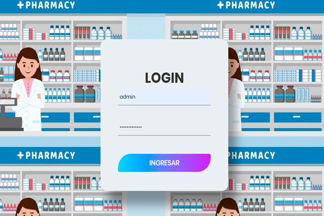
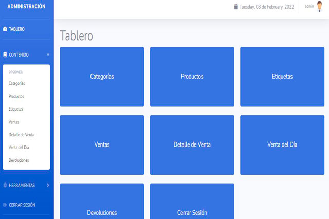
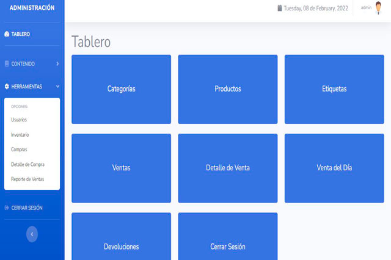

Punto De Venta De Una Farmacia



Propósito del Software
Llevar el control de ventas e inventario en una tienda naturista, en conjunto con herramientas de hardware como un monitor, un lector de código de barras e impresoras.
Consta de varios módulos:
- Categorías
- Productos
- Etiquetas
- Ventas
- Detalle de Venta
- Venta del Día
- Devoluciones
- Usuarios
- Inventario
- Compras
- Detalle de Compra
- Reporte de Ventas
Las funcionalidades son diversas desde las funciones básicas del crud, así como búsqueda, creación de reportes en formato xls, impresión de etiquetas, impresión de tickets, creación de reportes en pdf, ejecución de disparadores automáticos (Triggers) y procedimientos almacenados (Stored Procedure). De acuerdo al tipo de usuario son los permisos a los que puede tener control.
Tecnologías Utilizadas
HTML CSS Bootstrap JavaScript jQuery PHP Sweetalert2 Popper Datatables Buttons Fontawesome